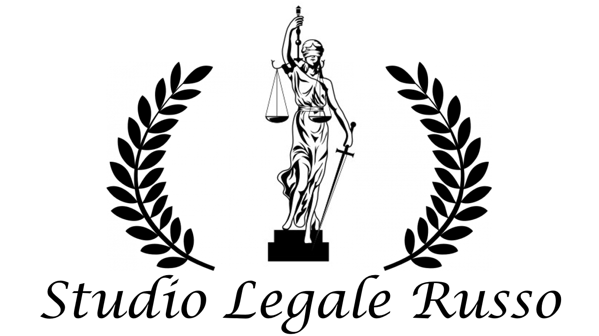

Diritto dell'Immigrazione
Quello dell’immigrazione è un fenomeno abbastanza recente e attuale più che mai. Un fenomeno che chiama l’Italia a misurarsi, sul piano culturale e politico, con l'afflusso crescente di uomini e donne di culture, usi e religioni assai diverse tra loro a cui, purtroppo, per via della farraginosa burocrazia che affligge il nostro ordinamento, non sempre riesce a far fronte garantendo il pieno soddisfacimento di quelli che sono i più basilari e precipui diritti della persona. Lo Studio si occupa di ogni tipo di richiesta utile a tutelare e regolarizzare lo straniero sul territorio nazionale, quali: asilo politico, permesso di soggiorno, cittadinanza, ricongiungimenti familiari, ricorsi avverso provvedimenti di diniego ed espulsioni dal territorio italiano.
Ricorso avverso la decisione della Commissione Territoriale innanzi all'Autorità Giudiziaria ordinaria ai fini del:
Il ricorso avverso la decisione della Commissione Territoriale è ammesso anche nel caso in cui l'interessato abbia richiesto il riconoscimento dello status di rifugiato e sia stato ammesso esclusivamente alla protezione sussidiaria.
I professionisti dello studio garantiscono un’assistenza piena in favore del cliente sin dal primo momento e fino al rilascio del documento richiesto, utile ai fini della regolarizzazione sul territorio nazionale.